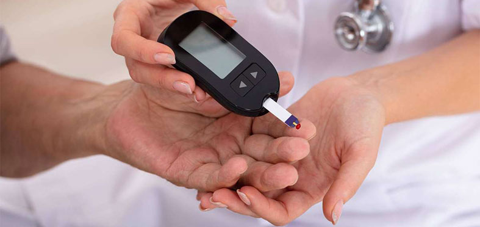
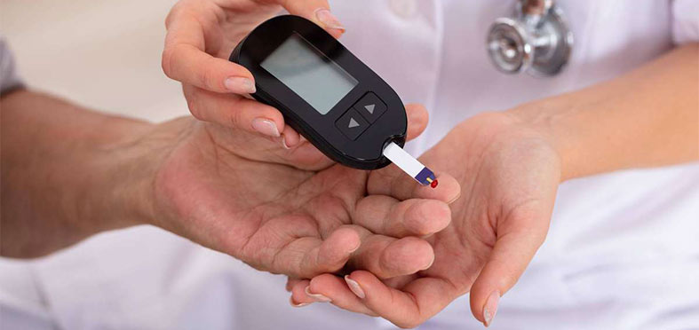
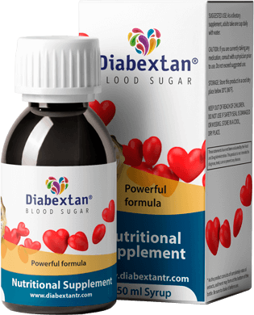

الصفحة الرئيسية الصحة سكر الدم
بواسطة ناثان جونز |

 

يُمثّل مستوى السكر في الدم مصدر قلق كبير لمرضى السكري. يحدث ارتفاع نسبة السكر في الدم عندما يزيد مستوى السكر في الدم عن 180 ملليغرام لكل ديسيلتر (ملجم/ديسيلتر).
وهل تعلم أن اضطراب مستوى السكر في الدم يمكن أن يكون له عواقب سلبية على صحة وجودة الحياة "لمرضى ما قبل السكري" الذين يشعرون بأعراض دون أن يعرفوا ذلك؟
في هذه المقالة، نستعرض معًا أهم 4 أسرار لخفض نسبة السكر في الدم.
لماذا تُعد السيطرة على نسبة السكر في الدم مهمة؟
يمكن أن يساعدك الحفاظ على القيمة المستهدفة لنسبة السكر في الدم على تجنب المشاكل الصحية المرتبطة بارتفاع نسبة السكر في الدم.
وبمرور الوقت، يمكن أن يؤدي مستوى السكر غير الصحي في الدم إلى إتلاف الأوعية الدموية الصغيرة والكبيرة في العديد من الأجهزة والأنظمة، الأمر الذي يؤدي إلى عواقب وخيمة تشمل ما يلي: ضعف البصر والعمى، وتقرحات القدم، والالتهابات وبتر الأطراف، والفشل الكلوي والغسيل الكلوي، والنوبات القلبية والسكتات الدماغية، وأمراض الأوعية الدموية الطرفية، وتلف الجهاز العصبي مما يؤدي إلى الألم والضعف العام.
ألقِ نظرة على هذه الإحصائيات المذهلة: ما يصل إلى 90٪ من الأشخاص في المملكة المتحدة يعانون من خلل بمستوى السكر في الدم. هل تشعر بالجوع أكثر من المعتاد؟ أم تشعر بالعطش أكثر من المعتاد؟ هل تشعر بألم في الجزء العلوي من ساقيك أو تشعر بتورم الكاحلين والقدمين؟ إذا كان الأمر كذلك، فهناك احتمال كبير بأنك ستعاني من عواقب ارتفاع مستوى السكر في الدم.
بالحفاظ على نسبة السكر في الدم لديك أقل من 100 مجم / ديسيلتر قبل الوجبات وأقل من 180 مجم / ديسيلتر بعد الوجبات، يُمكنك تقليل مخاطر الآثار الجانبية الناتجة عن اضطراب مستوى السكر في الدم.
كيفية خفض نسبة السكر في الدم

فيما يلي أهم 4 طرق لخفض نسبة السكر في الدم المرتفعة وتقليل خطر حدوث مضاعفات:
قلل من تناول الكربوهيدرات 1
أجرى باحثون دراسات أظهرت أن تناول أطعمة منخفضة الكربوهيدرات وغنية بالبروتين يؤدي إلى خفض مستوى السكر في الدم.
يحوّل الجسم الكربوهيدرات إلى سكريات يستخدمها في صورة طاقة. جدير بالذكر أن بعض الكربوهيدرات ضرورية في النظام الغذائي. ومع ذلك، بالنسبة للعديد من الأشخاص (خاصة المصابين بداء السكري)، فإن تناول الكثير من الكربوهيدرات يُمكن أن يؤدي إلى قفزة كبيرة في نسبة السكر في الدم.
ويؤدي تقليل كمية الكربوهيدرات التي يتناولها الشخص إلى الحد من تذبذب مستوى السكر في الدم.
2 تناول الكربوهيدرات الصحية
تنقسم الكربوهيدرات إلى نوعين رئيسيين هما: بسيطة ومعقدة، ويختلف تأثيرهما على مستوى السكر في الدم.
وتتكون الكربوهيدرات البسيطة في الغالب من نوع واحد من السكر. وتوجد في الأطعمة مثل الخبز الأبيض والمعكرونة والحلويات. ويقوم الجسم بتفكيك هذه الكربوهيدرات إلى سكريات بسرعة كبيرة مما يؤدي إلى ارتفاع مستوى السكر في الدم بسرعة.
أما الكربوهيدرات المعقدة، فتتكون من ثلاثة أنواع أو أكثر من السكريات المرتبطة ببعضها البعض. لأن الروابط الكيميائية بين هذه الأنواع من السكريات معقدة، يحتاج الجسم إلى مزيد من الوقت لتفكيكها.
وبذلك، يتم إطلاق السكر في الجسم بشكل تدريجي، مما يعني أن مستوى السكر في الدم لا يرتفع بسرعة بعد تناول الطعام. ومن الأمثلة على الكربوهيدرات المعقدة الحبوب الكاملة والبطاطا الحلوة.
3 اختيار الأطعمة ذات المؤشر الجلايسيمي المنخفض
يقيس المؤشر السكري الأطعمة المختلفة ويصنفها وفقًا لكيفية تسببها في ارتفاع مستويات السكر في الدم. وتظهر الأبحاث أن الالتزام بنظام غذائي منخفض المؤشر السكري يقلل من القفزة السريعة في مستوى السكر في الدم.
الأطعمة ذات المؤشر السكري المنخفض هي تلك التي تقل قيمتها عن 55. من أمثلة الأطعمة ذات المؤشر الجلايسيمي المنخفض: البطاطا الحلوة والكينوا والبقوليات والحليب قليل الدسم والخضروات ذات الأوراق الخضراء والخضروات غير النشوية والمكسرات والبذور واللحوم والأسماك.
4 تناول مكملات السيطرة على نسبة السكر في الدم بانتظام
ومن الأمثلة على مكملات الحفاظ على مستوى السكر في الدم والذي تم تناوله في وسائل الإعلام مؤخرًا بشكل كبير لسبب وجيه.
المكل الغذائي مصنوع من مكونات طبيعية تم اختبارها سريريًا، وأثبتت فعاليتها في ضبط مستوى السكر في الدم. وتشمل الفوائد الرئيسية لتناول المكملات الغذائية دعم الأداء الصحي لعملية التمثيل الغذائي، وتحفيز التمثيل الغذائي الصحي للكربوهيدرات والدهون، والحفاظ على مستوى صحي للسكر في الدم.
ومن المزايا الإضافية أنه يساعد في إنقاص الوزن، وذلك أن ارتفاع نسبة السكر في الدم يؤدي إلى إفراز الأنسولين الزائد الذي يمنع الجسم من حرق الدهون.
والنقطة الأساسية هي أن سهل التناول. فكل ما عليك تناول هذا الشراب مرتين يوميًا، صباحًا ومساءً. وتجدر الإشارة إلى أن هذه الشراب يقوم على مكونات نباتية، لذلك لا تحتاج إلى وصفة طبية.
ما الذي أحتاج إلى معرفته أيضًا؟
شرح مختصر؟ إذا كنت تعاني من الآثار الضارة لارتفاع نسبة السكر في الدم، فعليك شراء على الفور
هل تحتاج لمزيد من المعلومات؟ هنا مزيد من المعلومات حول السبب الذي يجعل رائع جدًا:
إنه منتج طبيعي تمامًا.
هو حل طبيعي تمامًا يشتمل على مزيج من المستخلصات النباتية. ليست
هناك حاجة إلى وصفة طبية.
مضمون لمساعدتك.
يتمتع بضمان رضا العملاء بنسبة 100٪
مما يعني أنه ليس لديك ما تخسره.
من أين أشتريه؟
لا تقع في فخ شراء المنتجات الرخيصة عبر الإنترنت. قم بزيارة الموقع الإلكتروني للمنتج لشراء الأصلي الآن.
توقف عن إهدار أموالك. خذ بزمام المبادرة اليوم.
إذا كان ارتفاع السكر في الدم يسبب لك الإحباط ويقلل من جودة حياتك، فأنت بحاجة إلى حل أفضل. خذ بزمام المبادرة وبادر بالشراء .
عرض خاص لقرائنا
 تتوفر 20 علبة أخرى فقط.
تتوفر 20 علبة أخرى فقط.
ينتهي العرض الخاص في:

احصل على 3 علب مجانًا
المكل الغذائي مصنوع من مكونات طبيعية تم اختبارها سريريًا، وأثبتت فعاليتها في ضبط مستوى السكر في الدم. وتشمل الفوائد الرئيسية لتناول المكملات الغذائية دعم الأداء الصحي لعملية التمثيل الغذائي، وتحفيز التمثيل الغذائي الصحي للكربوهيدرات والدهون، والحفاظ على مستوى صحي للسكر في الدم.نا
عرض حصري لقرائاستمتع بحياة أكثر نشاطا مع ضغط دم 80/120.
النظام الغذائي المثالي للسيطرة على السكر.
التعليقات 

347 تعليقًا
جميلة  أهم التعليقات
أهم التعليقات
أنا مبسوطة جدًا إن رجلي بقت طبيعية! كانت تعباني جدًا لفترة طويلة. نسيت التعب بعد ما رجلي خفت.
رد• إعجاب • متابعة المنشور
هاني•  172 متابع
172 متابع
كنت باعاني من السكر المرتفع شهور طويلة وكنت عارف اني على وشك إني آخد علاج علشان يظبطه. وبقيت سعيد جدًا لما قدرت اتغلب على المشكلة لوحدي.
رد• إعجاب • متابعة المنشور
ياسمين • 122 متابع
بقيت أقدر اتحرك في المنزل والجنينة بسهولة، بقالي شهرين ما كنتش أقدر اعمل كده علشان كنت نايمة في السرير تقريبًا بسبب تعب رجلي
رد• إعجاب • متابعة المنشور
سعاد • 67 متابع
باحب رجلي تكون دافية وباحب المنتج ده! بسبب ضعف الدورة الدموية، كانت رجلي ودراعي باردين طول الوقت. ودلوقتي ما فيش الكلام ده.
رد• إعجاب • متابعة المنشور

أيمن • 49 متابع
لأول مرة من 10 سنين أقدر ألعب. ما كنتش أفكر أبدًا أن رجلي هتكون بصحة جيدة وأقدر ألعب مرة تانية. ما كنش عندي حق :)
رد• إعجاب • متابعة المنشور
نادية • 38 متابع
حاسة إني رجعت طبيعية مرة تانية. رجلي بقت طبيعية وحاسة أنني أفضل من الأول بكثير.
رد• إعجاب • متابعة المنشور